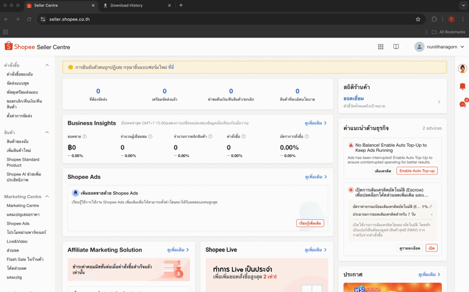
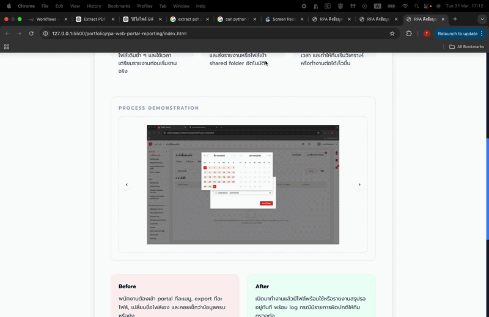

Project Overview
โหลดไฟล์ซ้ำ ๆ จนรายงานเสร็จช้า
login ครบทุกระบบก่อนทีมเข้างาน
ตั้งชื่อไฟล์ ตรวจ format รายการผิดปกติลง log
ไฟล์อยู่ใน shared folder พร้อมใช้ทันที
กรณีศึกษาจำลองสำหรับงานที่ bot ต้อง login เข้า portal, export ข้อมูลหลายชุด, จัดรูปแบบไฟล์ และส่งรายงานสรุปให้ทีมงานทุกวัน โดยใช้ข้อมูลและหน้าจอจำลองแทนระบบจริง
ทีมต้องเข้า web portal หลายรอบต่อวัน ดาวน์โหลดไฟล์เดิมซ้ำ ๆ และใช้เวลาเตรียมรายงานก่อนเริ่มงานจริง
ใช้ RPA login, ดึงข้อมูล, รวมไฟล์, rename, ตรวจ format และส่งรายงานหรือไฟล์เข้า shared folder อัตโนมัติ
ลดงาน routine ตอนเช้า ลดความเสี่ยงโหลดไฟล์ผิดช่วงเวลา และทำให้ทีมเริ่มวิเคราะห์หรือทำงานต่อได้เร็วขึ้น
Process Demonstration


พนักงานต้องเข้า portal ทีละเมนู, export ทีละไฟล์, เปลี่ยนชื่อไฟล์เอง และคอยเช็กว่าข้อมูลครบหรือยัง
เปิดมาทำงานแล้วมีไฟล์พร้อมใช้หรือรายงานสรุปรออยู่ทันที พร้อม log กรณีมีรายการผิดปกติให้ทีมตรวจต่อ
Confidentiality Note
ผลงานชิ้นนี้เป็น mockup ที่อ้างอิงจาก workflow งานจริง โดยมีการเปลี่ยนหน้าจอ ชื่อระบบ โครงเมนู และข้อมูลทั้งหมดเพื่อหลีกเลี่ยงการเปิดเผยข้อมูลลูกค้า
Related Service
บริการที่เกี่ยวข้องกับผลงานชิ้นนี้
RPA Portal #Automation
เหมาะกับงานดึงข้อมูลข้ามระบบ, login web portal, ดาวน์โหลดไฟล์ และจัดรอบรายงานอัตโนมัติ